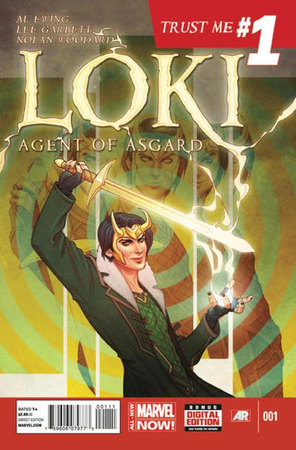

Loki Agent of Asgard

Series: 17 issues 2014-2015
Publisher: Marvel
Written by Al Ewing
Illustrations by Jenny Frison, Lee Garbett,
Loki infiltrates Avengers Tower on a mission from the All-Mother. When Loki is assigned to bring Lorelei back to Asgard, he goes way undercover to capture her. Later, he meets an intriguing mortal woman named Verity who can see through lies.